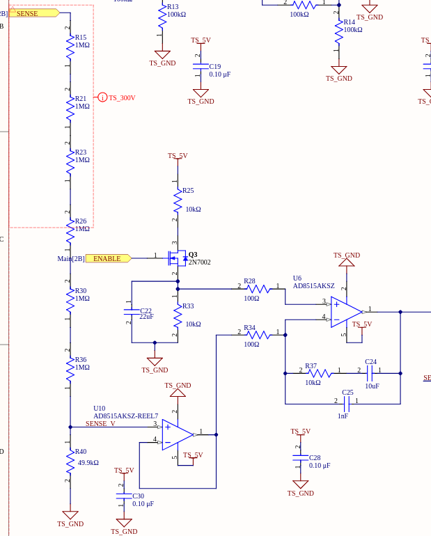

The date is January 7, 2024. I am in my 4B term of Mechatronics Engineering at the University of Waterloo.
That is my final year and means I have a full course load as well as a capstone project.
I am also the Technical Lead of the Waterloo Formula Electric.
Which means I'm responsible for everything that goes on the vehicle: mechanical, electrical and software.
What is Formula Electric
Every year a whole bunch of teams from across the world compete in Formula One style events with fully electric racecars.
The goal is to design and assemble a new car every year to compete against other teams.
Context on Waterloo Formula Electric
Front View of the Formula Electric Vehicle in the Ford Wind Tunnel
Waterloo Formula Electric is a team that has had some troubles in the past.
Due to the unique nature of co-op and certain academic administrative conflicts the team has not been in a great spot.
From 2018-2022 there was no working vehicle.
In the years from 2021-2024 when I was technical lead of the team I worked hard to try and turn the team around.
Redesigning much of the vehicle to get a FSAE Michigan compliant vehicle so we could run at competition.
Why 24 Hours?
Initially I had given the task to one of the electrical leads on the team.
The goal was to have a first revision in the fall of 2023, but by December 2023 no schematics were even drawn up.
The vehicle deadlines were slipping and I was full gear on other work, but decided we needed something for our DC-DC.
Due to lead-times the idea of doing it 1 month before competition was not really feasible.
Purpose
HV Schematic of the Formula Electric Vehicle with the DC-DC Highlighted
The DC-DC converter sits inside our HV (High-Voltage) battery electronics box.
It's idea is to step down the full battery voltage (min 350V, max 588V) to 12V.
The idea is to support the small low-voltage batteries we use to power the low voltage systems on our car.
In particular to supplement the high loads from the pumps and fans for motor, motor controller and battery.
DC-DC Topology
Basic topology of a buck converter
We'll just quickly brush up on the simple buck converter topology. We have our high-voltage source on the left.
The switch is on our case just a MOSFET.
We need to switch the MOSFET faster than the resonant frequency of the LC time constant to get a smooth output voltage.
The duty cycle of the MOSFET controls the output voltage.
There are a few other equations and the voltage ripple estimate doesn't factor in capacitor ESR, but this covers the general concepts.
Output voltage is proportional to duty cycle. Higher capacitance, inductance and especially switching frequency will result in lower output voltage ripple.
This is important as mass is a big factor in the design as you will see.
Design
Disclaimer
I want to make a disclaimer before going further.
This is not a good design.
Don't go repeating this unless you want to learn more about DC-DCs and want to experiment with failure modes.
I designed this in 24 hours, with lots of caffeine, no sleep and lot's of stress.
Most design decisions were made for: lower mass, quicker debugging/iterations.
Initial Design Decisions
As stated previously the battery pack voltage goes from 350V-588V, so in practice we need to design a DC-DC
that can handle ~600V+ and maintain regulation down to about 350V.
We want to achieve a power output as high as possible but in practice at least 120W (12V, 10A).
But a big factor is weight and volume, we have to package this inside our tight electronics box and mass is important
for Formula SAE vehicles.
The first thing you should always consider is can we buy this off the shelf.
Vendors can get significantly better packaging than we can with custom components and huge testing efforts.
Attempts were made, and subsequently failed to get anything off the shelf that would meet our needs.
Designing a 600V to 12V isolated DC-DC is quite a challenge, and one has to be honest with themselves, doing any advanced
topology in tight packaging is not feasible in the limited time we have. Likely we will get the first iteration and it will not work.
So, what we do have is in 2018 someone did design a 300V-12V isolated DC-DC board using Vicor's PAF600F280-12 module.
The board does work, it's been validated under load and IIRC it has EMI issues and some choppy output but it will work for our needs.
PAF600F280-12 module from Vicor
Given we have a 300V-12V DC-DC board which has some pretty wide operating voltage range and a fairly tight power density.
All we have to do is design a 600V-300V design with some caveats.
1. We must ensure that
under any situation lest we risk damaging the 2nd stage DC-DC.
2. We must ensure that properly enable the 2nd stage DC-DC when the 1st stage is ready.
3. We must aim for high power density given we already have a fairly chunky 2nd stage DC-DC in the box.
Overview
If you sketch out the high level overview the following schematic is how it looks.
Overview Schematic for DC-DC
It's quite messy due to the rushed manner in which it is done.
But you can pretty much make out the various blocks of the original buck converter as presented above.
I'll try to cover all the interesting components going forward.
Note: You will notice throughout the schematics there are various net classes I define (TSV, GLV, etc.)
these are all spacing net classes to ensure clear seperation between the high voltages and prevent any arcing.
Control Topology
Analog Control Topology for DC-DC
This is probably the real interesting part of the project and one which people care the most about.
I did a full analog control topology for this DC-DC converter.
Just looking at it, it is quite daunting to take in, but once you break it down it is quite simple.
I go into some mathematics in this section.
But one thing I've learned in EE design from mentors and especially from the "Art of Electronics" is don't get bogged down in the math.
When you're starting out design, think through it logically as blocks, run simulations for some proof and if you have to do deep analysis then bring out the math.
The Art of Electronics Book (Highly Recommend)
We'll begin as with any system by breaking it down into sub-sections.
Annotated Schematic of Control Topology
Triangle Reference
The way one typically does DC-DC control is they have a reference waveform ("chopper")
and when the reference waveform rises above some threshold it will trigger "on" the MOSFET and when it's below
the threshold is turns "off".
I've done this by using an analog triangle wave generator as shown.
Triangle Wave Generator
One way to think about this, is as 2 different stages of op-amps.
Non-Zero Reference Schmitt Trigger
The first op-amp (U3) is effectively a non-zero reference schmitt trigger, when the input rises above a threshold it drives HIGH,
and remains HIGH until it reaches a low threshold in which case it drives LOW.
The characteristics equations for this are shown here:
The result is you get a LOW threshold of ~0.75V and a HIGH threshold of ~4.25V.
Integrator
The second op-amp (U4) is an inverting integrator.
When the input to this stage is greater than 2.5V, the op-amp will integrate in the negative direction.
When the input to this stage is less than 2.5V the op-amp will integrate in the positive direction.
Inverting Integrator Simulation
The RC combination are selected to set the slope of the integration.
This directly sets the switching frequency for the device.
The characteristic equation for an inverting op-amp integrator is shown below.
You can then simplify to get the rate of change of the output voltage which gives you the slope of your triangle wave.
You can rearrange to do the math and you get the following result for switching frequency.
In this case "V" is your peak-peak voltage of your schmidt trigger.
In our case it's approximately 3.5 (4.25-0.75), you solve that and you get a switching frequency of ~12kHz.
Though due to stage loading and non-idealities in op-amps you should run simulations to get a more accurate result.
Our result is really about 10kHz switching frequency, but the exact number is not that important for us.
Input
This part is pretty simple. Effectively for our regulator, to control our reference we need some concept of input.
Input Schematic
This is a dead simple voltage divider, it takes in the output voltage and steps it down such that 300V output ~2.5V in to the op-amp.
Careful effort must be used here to ensure that there is proper spacings between the multiple resistors to prevent damaging and over-volting them.
Regulator
The regulator part is perhaps the coolest part.

Regulator Blocks
Resistor Ladder Input
We'll start with the left part. As stated we have the resistor ladder which steps down our measured output voltage from 300V to ~2.5V.
This gets buffered and passed into one side of our feedback regulator (U6).
Reference Input
On the other side we have a simple resistor ladder (R25, R33).
All this really is, is it sets our reference voltage we want to achieve.
As I stated before the input get's scalled from 300V to ~2.5V.
Our desired reference voltage is set to be at ~2.5V.
You'll notice there's a MOSFET (Q3) there.
It serves a very simple purpose, when ENABLE is low, Q3 enters the cutoff region, which pulls our reference voltage low, and subsequently our regulator will begin to cutoff.
You'll also notice there's a capacitor (C22) there.
This acts as a soft-start, the RC circuit has a time constant of ~0.1s, so in about 0.5s the reference will have reached steady state.
Feedback Regulator
The real complicated bit comes with the main regulator (U6).
What is implemented here is a Type II compensator.
I don't quite have the time to an in-depth analysis of the stability of the Type II compensator and performing selection of the components.
If you're curious TI has a pretty good article here.
Less-Technical Version
This regulator toplogy is trying to minimize the error between it's 2 input terminals.
It will try to set it's output such that the input from SENSE_V is equal to the reference voltage divider.
We can tune the various component values to get good tradeoffs between stability and response time.
If we say increased C3, we would have a slower, more stable response but a longer response time to changes in the system.
Technical Version
The Type II compensator was selected to give stronger control over the transient response while maintaining high stability.
There's a zero placement at ~2Hz to speed up the transient response, while a pole is placed at ~15kHz.
In hindsight, the pole should have probably been placed quite a bit slower to smooth out more of the switching action.
I was tuning control loops in simulation very late in the night and was planning on tuning parameters in person at some point.
I've sketched up a quick bode plot as shown below, so you can see the frequency response of the system.
Quick sample bode plot to show where the poles and zeros areOp-amp Comparator
Finally there is the op-amp comparator (U5).
This is a very simple comparator that outputs HIGH when the triangle wave output is above the reference voltage set by our Type II compensator (U6).
It outputs LOW when the triangle wave output is below said reference voltage.
This is effectively triggering the MOSFET for the DC-DC switching action ON and OFF.
Enable Control
Enable Passthrough Circuit
We already discussed briefly the enable MOSFET, so I will skip over that for now. You can learn more about it here.
This circuit here is really simple. It simply takes the voltage measurement stepped down from the output voltage.
It then buffers it, filters it a bit and sends it through a comparator.
In this case, ENABLE_OUT gets driven HIGH if the input voltage is ~1.666V which refers to an output voltage of ~200V.
ENABLE_OUT get's sent through an optocoupler device to isolate the HV referenced electronics.
This is then used to trigger ENABLE on the 2nd stage DC-DC. You can get more context in the high-level schematic here.
Over-Voltage Protection (OVP)
Over-Voltage Protection Circuit
The over-voltage protection circuit is also quite simple.
All it is, is a comparator circuit that triggers HIGH when the sensed input voltage rises above 3.33V which corresponds to an output voltage of ~404V.
When it outputs HIGH it drives the MOSFET Q4 LOW which effectivelly turns the regulator OFF as it pulls the reference for the comparator to 0.
Gate Drive
Gate Drive Circuit
The gate driver circuit is really simple and could result in some issues, but didn't during my time working with it.
I performed practically 0 analysis on this, I just trusted GaN Systems' writings that you can drive these GaN chips using a standard Si driver (see here for more details).
There's not much to say here it's a very simple topology. Isolated DC-DC module to supply the power for the gate drive unit.
10 ohm resistor is used to slow the rise time of the gate of the FET. Not much analysis was done, simply that this is a GaN FET
it has very high rise times, and we don't have a ton of time to do in-depth parasitic inductance analysis.
If it's an issue we'll have to settle that when we come to bringup and testing and tune the gate resistor.
Power Electronics
Inductor and Capacitor Selection
Note:I'm going to breeze through inductor and capacitor selection, it's not very interesting.
In sum, for capacitor and inductor selection, you need to ensure you have low output ripple, proper voltage ratings, low mass, low losses and ensuring the system remains in continuous conduction mode.
Bourns 1140-222K-RC (2.2mH inductor)
For the inductor I found a fairly compact and very high inductance inductor (2.2mH) that could still handle the current I hoped for (~2A) (here).
I stuck 3 of those in series, while ensuring that I stuck a connector across them so we could add more in the future if that was deemed necessary.
Inductor Schematic
For the input capacitance I selected a 650V 20uF film capacitor (this one).
KEMET C4AQ 20uF 650V capacitor
For the output capacitance I selected 4 450V 10uF aluminum capacitors (these ones).
Wurth Elektronik WCAP-ASLL 450V 10uF capacitor
If you run the calculations from above you end up with a ripple voltage of <1V, which is pretty good for our use case.
FET Selection
I wanted to minimize mass for this design.
Setting up a huge heatsink and having to worry about the creepage issues as we'd have to properly ground to the chassis this heatsink was not something I was interested in doing.
What I opted to do was, get a GaN HEMT, this would cost a bit extra but it would save on volume, it would yield very low switching losses while still having fairly low on-state resistance.
GaN HEMT (GS66516T)
The GS65516T has a low RDS(on) of 25mΩ and tiny gate charge of 14.2nC.
It also has a VDS(max) of 650V.
All in all it works great for our application, at our low switching frequency of 10kHz switching with this should not generate high losses, and at a maximum current of only about 2A you're looking at most 100mW conduction loss.
The plan was to put this under load and see if purely natural convection of this fairly significant thermal pad would yield a fairly decent operating margin.
Perhaps we'd have to put a fan near it, or worst case a very tiny heatsink.
Result/Conclusion
Routing
I won't go too much into the details of the routing as it was a long time ago, and a fairly poor job was done given the time.
HV Spacings
One thing that's quite important when designing PCBs with large voltages (>60V) is maintaining proper spacings between the traces.
If too high of a potential develops between close traces they could arc and cause a short between each other.
IPC Standard Breakdown
A generally accepted standard that I use is the IPC-2221 standard.
Many suggest that it's perhaps too conservative, although this may be true, I prefer to play it safe when it comes to safety and reliability even if it means sacrificing a few mm.
For anything over about 300V I'll typically use about 3-4mm spacing with conformal coating always.
If the system is certainly below ~400V I'll use ~3-4mm spacing without conformal coating if it's too much of a burden.
Fusing
I did not place any fusing on board, this was done to the extreme volume constraints imposed by the project.
If you're going to use a board like this you must ensure proper fusing off-board.
Ensure each fuse is rated for the maximum possible voltage (i.e 600V+).